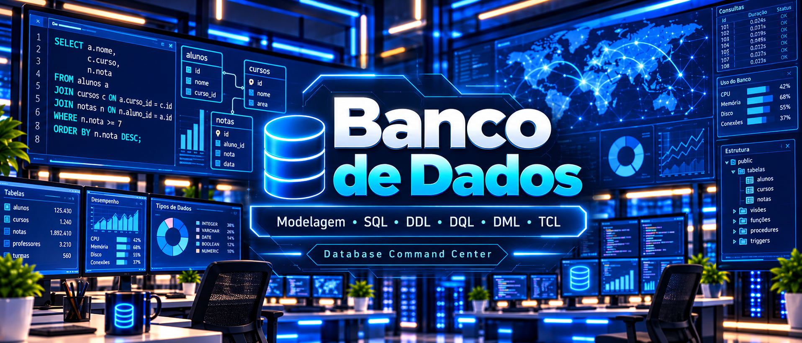
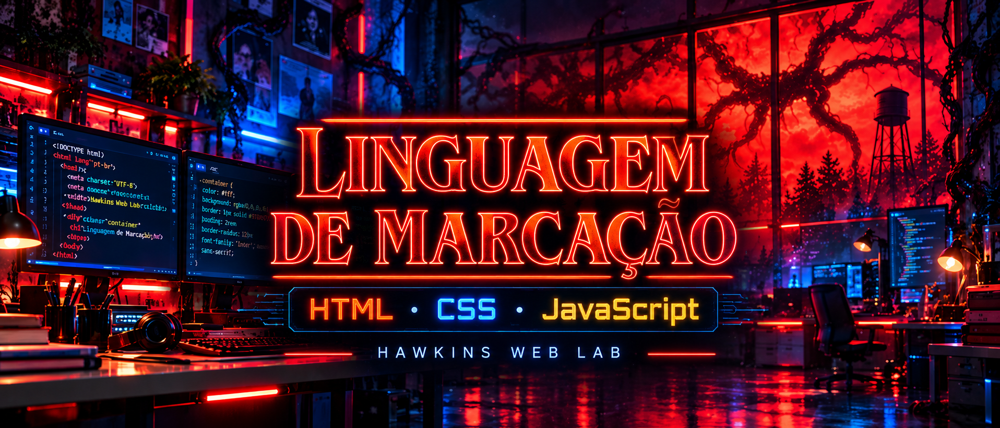
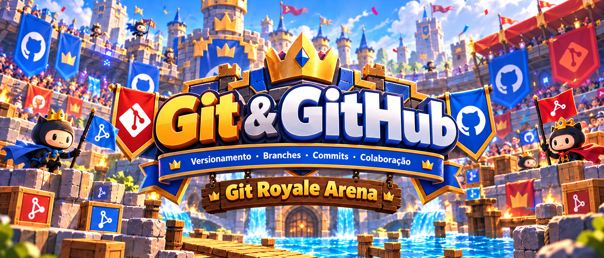

Banco de Dados
Database Command Center
Aulas interativas de fundamentos, modelagem, SQL e integridade, organizadas até a Aula 10.
- Fundamentos e configuração
- MER, DER e Dicionário de Dados
- DDL, DQL, DML e TCL
Escola SENAI Luiz Varga - Limeira/SP - CFP 505
Aprenda. Experimente. Desenvolva.

Banco de Dados
Aulas interativas de fundamentos, modelagem, SQL e integridade, organizadas até a Aula 10.

Linguagem de Marcação
Uma jornada por HTML, CSS e JavaScript, com experiências visuais inspiradas no universo de Hawkins.

Git & GitHub
Uma arena de consulta rápida para dominar versionamento, branches, commits, GitHub, conflitos e publicação.
Dispositivos Móveis
Prévia do novo cenário para desenvolvimento mobile, com operações, fases e BOSS Battles em uma ambientação de survival horror tecnológico.
Projeto integrador
Acesso direto
Todo o conteúdo didático está disponível diretamente pelo portal. Escolha uma trilha, avance pelas aulas e use os laboratórios interativos no navegador.
DEV · Desenvolvimento de Sistemas
Aprenda na prática explorando ambientes temáticos que conectam tecnologia, criatividade e desenvolvimento de sistemas.
Banco de Dados
Aulas interativas de fundamentos, modelagem, SQL, normalização, views e procedures.
Linguagem de Marcação
Uma jornada por HTML, CSS e JavaScript com experiências visuais inspiradas no universo de Hawkins.
Git & GitHub
Uma arena de consulta rápida para dominar versionamento, branches, commits, conflitos e publicação.
Dispositivos Móveis
Desenvolvimento de aplicativos em uma operação tecnológica inspirada em investigação, sobrevivência e ambiente tático.
Front-End
Uma nova trilha no Mundo Invertido para construir interfaces modernas, componentizadas e responsivas com os principais frameworks do mercado.
Projeto integrador
Acesso direto
Todo o conteúdo didático disponível pode ser acessado diretamente pelo portal. As áreas Mobile e Front-End permanecem sinalizadas como prévias enquanto suas trilhas são construídas.